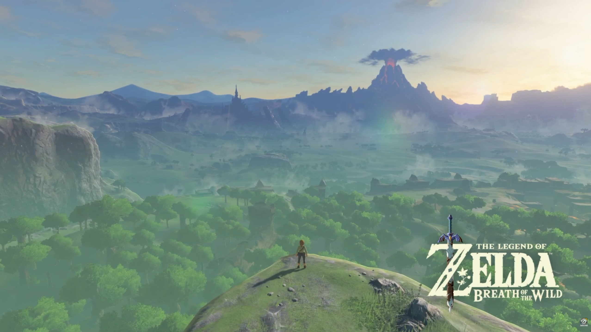

There’s a lot to say about Breath of the Wild. The first time I played this game is a special memory for me. Not necessarily because I love this game, but more so because of the era I was in. Breath of the Wild was released in spring of 2017 during my senior year of high school. My cousin brought his Switch to school so I could play during my free period. I had gone to the store and picked up some cookies and a drink. I was 17, two months from graduating high school, weather was beautiful, and I was about to play the new Zelda game. Life was good. I opened up the cookies and booted into the game.
This game wastes no time. You press start game and there is a brief title screen to remind you that you're about to play peak, then you're dropped in. Link wakes up from his deep sleep and has amnesia, and you have to find the way out of the cave. Takes one minute and that's when magic happens. You climb out of the cave and Link runs to edge of the cliff. The camera pans out and the piano builds up as the world is revealed for the first time.

Goosebumps. Goosebumps then, goosebumps now, goosebumps every time. Such a powerful opening scene to a game. I knew right then and there that I needed to buy this game. Oh wait, I also needed a Switch and they were all sold out. Bummer.It would take a few months for me to finally get my own Switch, since they would sell out so quickly. It was summer when I finally got one. I had shown up early to Toys R Us (remember that store?) and was 11th in line. “Surely I would get one”, I thought. After one or two hours of waiting, a worker comes out and announces they have 10 consoles. Heartbreak. How is this possible? I quickly opened my wallet and offered the guy in front me the $100 bill I had planned to use on games for his place in line. He refused. Granted it wasn't a lot, but it was all the cash I had. Instead he kindly gave me his spot and wished me happy gaming. He said something about already owning one and just looking to get one for his coworker's kid. Guess he figured some random 18 year old was a good enough substitute. I finally secured a console! BOTW here I come!
I loved my Switch. I played it for hours and would fight with my sibling over who got to play. Can you blame me, BOTW completely blew me away. I quickly played for close to 100 hours on it. I never did beat Ganon though. I just didn’t want the game to end and, eventually, I started other games. So there it sat for years, until TOTK released and I told myself I would finally beat BOTW to prepare. I didn't. I don’t even know if I played much further than finishing The Great Plateau. And there it sat again, collecting dust in my backlog. “How can I, the biggest Zelda fan, not have beat BOTW?”, I would think. Years passed again.
Now the year is 2026 and, as a grad gift, my sibling gifted me a Switch 2. And if you don't know, BOTW has a Switch 2 upgrade (oooo 60fps!). So, naturally, I bought the upgrade and then months passed. Finally, sometime in February or March, I started playing BOTW again. This time in higher resolution and 60fps. Beautiful. I enjoyed every minute and explored every nook and cranny. The world is so expertly designed that you always have 5 interesting places you want to go see. And you're a fool if you think you can go from point A to point B without a detour, or three.
I quickly hit 10 hours, then 20, then 40. I start prepping to fight Ganon by wrapping up a few side quests first and getting more hearts and stamina. I knew that once I beat him, I would probably stop playing. Around 50 hours in, I decide it's time. I ascend Hyrule Castle for the first time and I fight Ganon. Such a cool fight, though a bit easy. At least, Zelda’s appearance and support in the fight was really cool.
So there it was. 9 years later, I finally beat Breath of the Wild. Wow. I have a lot to say but it can really be summed up in a few words: Breath of the Wild is the perfect game.
Switching gears to the music, this is the quietest Zelda game ever. You go into the field, climb a mount, go gliding, go riding, go sliding. Whatever it might be, the game seldom plays music in the open world when you’re exploring. You hear Link’s footsteps, and his clothes and weapons moving around. You hear animals, like birds chirping and fish jumping. Every 5-10 minutes you hear a slow, faint, lonely piano.
Some video I saw said it best: It’s painfully clear that it’s only you, a hero who lost the fight, lost his friends, and lost his memories.

There are towns, both new and recurring, that have beautiful music to accompany them. The one I always think of first is Hateno Village. What a banger. Tarrey Town's music is incredible, where more instruments are added with each resident you bring in. Can't forget Rito Village, which reminds you of Dragon Roost Island from Wind Waker. Peak. The stables music! Get Kass to play his accordion and you got Lon Lon Ranch. Amazing. Mount Hylia is a slower song out of this bunch, but man, what a track. That piano and wind instrument are on another level. Genius.
This is the first Zelda since the first that doesn’t hold your hand through everything. Aside from the tutorial area, you are free to go where you want and complete (or skip) the dungeons and bosses in any order you want. Shrines and Koroks are the same way. The world is hostile and it will be clear when you need to turn around, but if you have the motivation and skill, you can push through. Or even if you don't have the skill, you might be able to luck your way through it. There are so many mechanics that interact with each other that there is no one clear solution. If there is a enemy or puzzle, you have hundreds of ways to approach it. This amount of freedom is refreshing even 9 years later after release. It’s the easier, safer route to just funnel the character down a specific path and order. Not this Zelda game! You are given some tools and let loose in the world to figure it out for yourself.
I love this game. It's the definition of a 10/10. The world is a fully lived in, fully realized setting with history and purpose. It’s crazy diverse too. You can have the four corners: Desert, Lake, Snow, Volcano. You also have jungles, mountains, canyons, rivers, oceans, swamps, etc etc etc. Each with their own challenges and secrets, waiting for you to find them, To avoid rambling, I’ll wrap up by saying: Breath of the Wild is an epic game with an epic scale, created by game designers and artists who clearly have so much passion. Breath of the Wild is my favorite game.

posted on: 04/29/2026